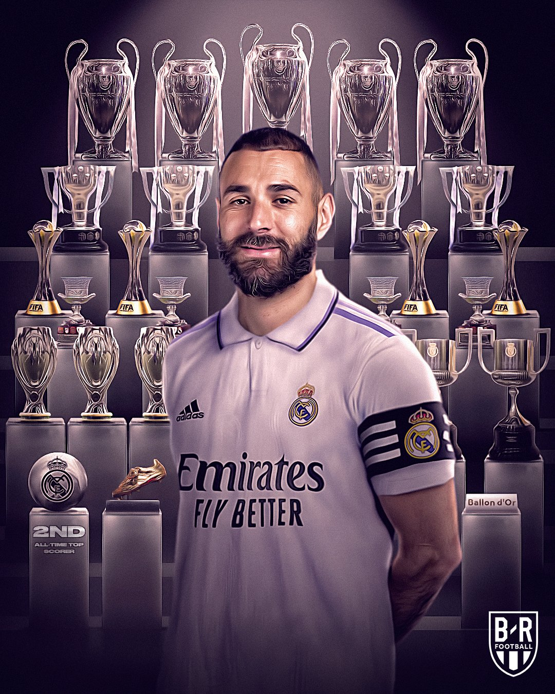

Karim Mostafa Benzema (born 19 December 1987) is a French professional footballer who plays as a striker for and captains La Liga club Real Madrid. A creative and prolific forward, Benzema is regarded as one of the best strikers of all time.[4][5][6] He is Real Madrid's all-time second-highest goalscorer and top assist provider.[7] Benzema has won 24 trophies with Real Madrid, including four La Liga, two Copa del Rey and five UEFA Champions League titles. Born in Lyon to Algerian parents, Benzema began his career with hometown club Olympique Lyonnais in 2005, contributing sporadically to three Ligue 1 title wins. In 2008, he was named the league's Player of the Year and in the Team of the Year having finished as the league's top goalscorer and winning his fourth league title and first Coupe de France. In 2009, Benzema was the subject of a then-French record football transfer when he joined Real Madrid in a deal worth €35 million. After struggling to establish himself in his debut season, he eventually achieved a consistent goalscoring rate with the club, notably being part of a highly rated trio alongside Cristiano Ronaldo and Gareth Bale — dubbed BBC — who were integral to four Champions League wins from 2014 to 2018. Following Ronaldo's departure in 2018, Benzema transitioned from the false 9 position into a sole striker. He was named in the La Liga Team of the Season for four consecutive years from 2018 to 2022, won La Liga Best Player twice and the Pichichi Trophy for the first time in 2022. Benzema finished as Champions League top scorer as he won his fifth title in 2022. A French international, Benzema won the 2004 UEFA European Under-17 Championship and made his senior debut for France in 2007, at age 19. He earned 97 caps, including scoring in three and appearing in four major tournaments, and ranks as France's fifth-highest all-time top goalscorer. Benzema was controversially left out of the squad for the 2010 World Cup and did not play for France for over five years after being implicated in a blackmailing scandal in 2015; he later returned to the squad before announcing his international retirement in December 2022. He has been named French Player of the Year by France Football four times. For his performances in 2021 and 2022, Benzema was awarded the UEFA Player of the Year and the Ballon d'Or, becoming the fifth French player to have won the Ballon d'Or.[8] At 34 years and 302 days old, he is the second-oldest winner of the award, after Stanley Matthews.
Benzema was born in Lyon to French nationals of Algerian descent.[13][338] His grandfather, Da Lakehal Benzema, lived in the village of Tigzirt, located in the northern town of Aït Djellil in Algeria before migrating to Lyon, where he eventually settled in the 1950s.[339] Benzema's father, Hafid, was born in Tigzirt, while his mother, Wahida Djebbara, was born and raised in Lyon; her family originated from Oran. Benzema is the third youngest in the family and grew up with eight other siblings in Bron, an eastern suburb of Lyon.[339] His younger brothers Gressy and Sabri are also footballers.[340] The former plays at the amateur level with Vaulx-le-Velin in the Division d'Honneur, the sixth division of French football, while the latter plays in the youth academy of a club in the family's hometown of Bron.[341][342] On 3 February 2014, his then-girlfriend Chloé de Launay gave birth to their daughter Mélia in Madrid.[343] On 5 May 2017, his girlfriend Cora Gauthier gave birth to their son Ibrahim.[344] A practicing Muslim, Benzema observes fasting during the Islamic holy month of Ramadan.[345] He has spoken about his faith saying: "My faith helps me to be focused every day. It brings me benefits and it's my strength for me, my family, as well as for my work – for literally everything."[346] Since evolving internationally, Benzema has participated in numerous advertising campaigns. He was chosen as an ambassador of the American video game publisher Electronic Arts for the FIFA series. He has signed several sponsorship contracts, notably with the Korean automobile manufacturer Hyundai, the French telephone operator SFR and its subsidiary BuzzMobile, the French bank LCL and the sports betting company bwin. Benzema is sponsored by Adidas.[347] In 2017, his documentary film Le K Benzema was released.[348] In 2020, Benzema started his own YouTube channel, uploading videos of his everyday life, as well as interviews and fan Q&As.
| TEAMS | APPERANCES | GOALS | ASSISTS | ||
|---|---|---|---|---|---|
| Red cards | Yellow card | Games | |||
| Real Madrid CF | 0 | 18 | 735 | 373 | 192 |